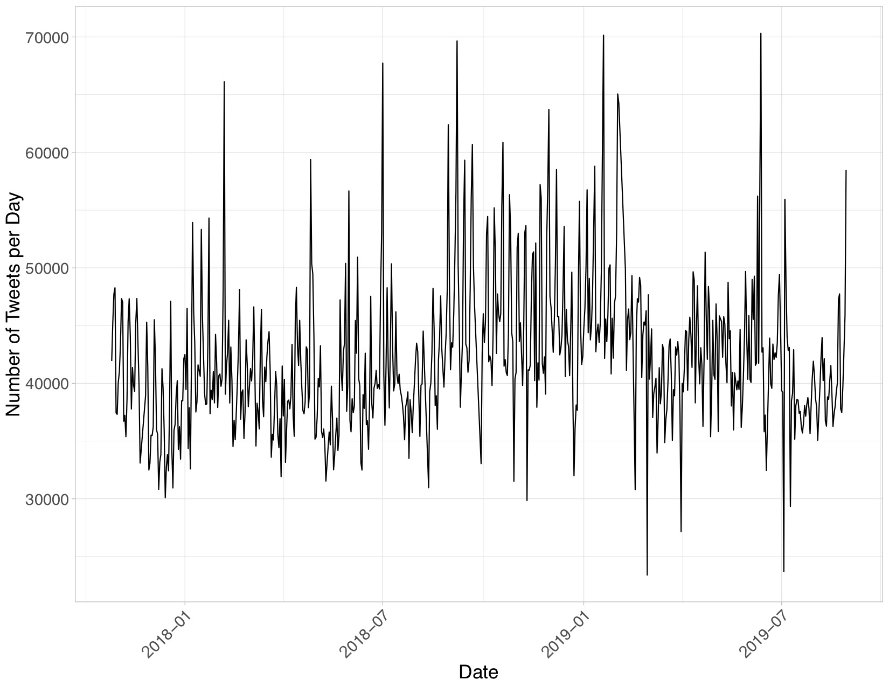
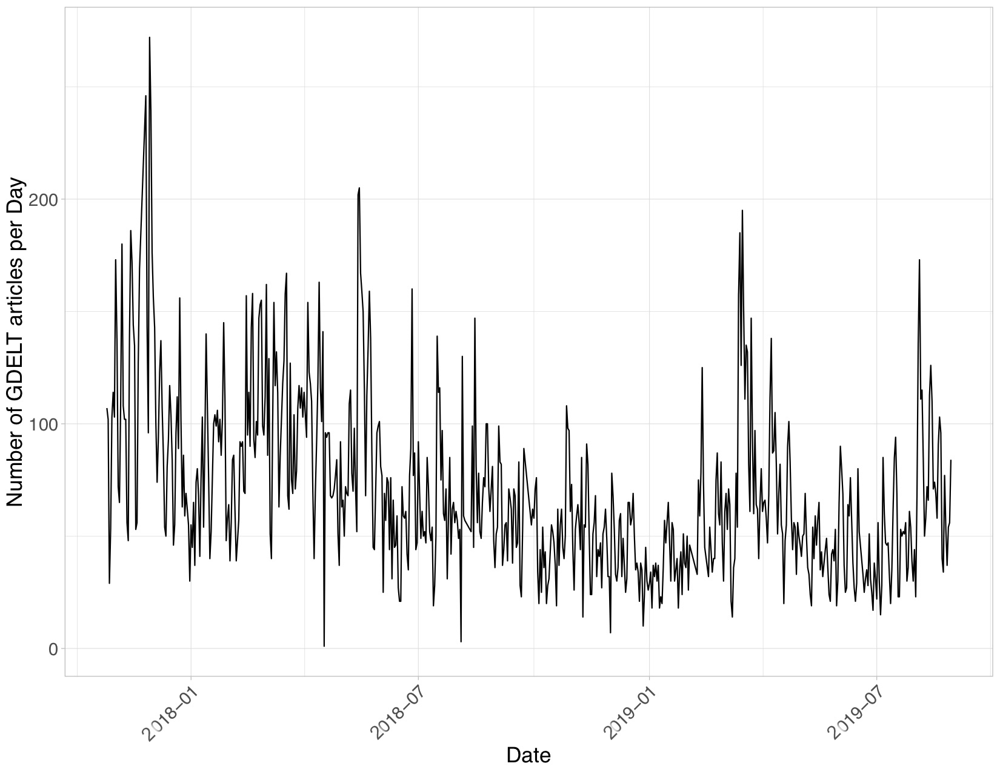
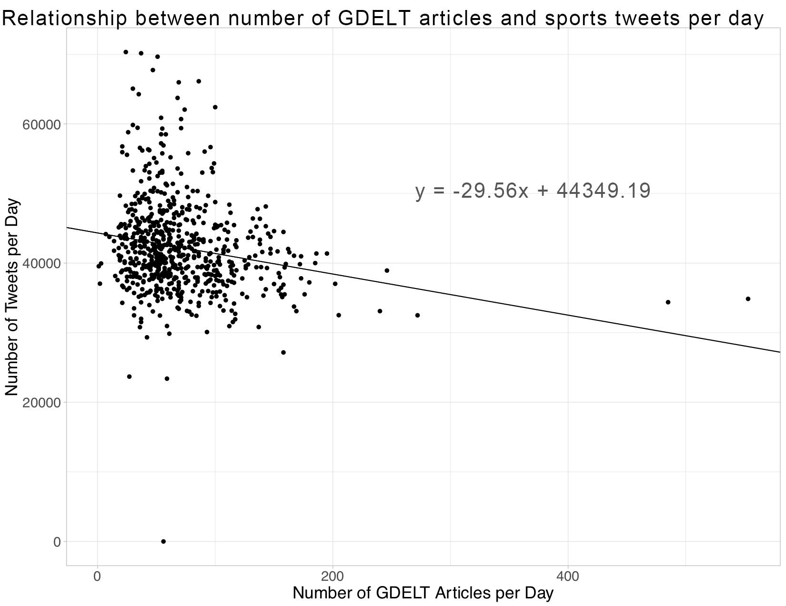
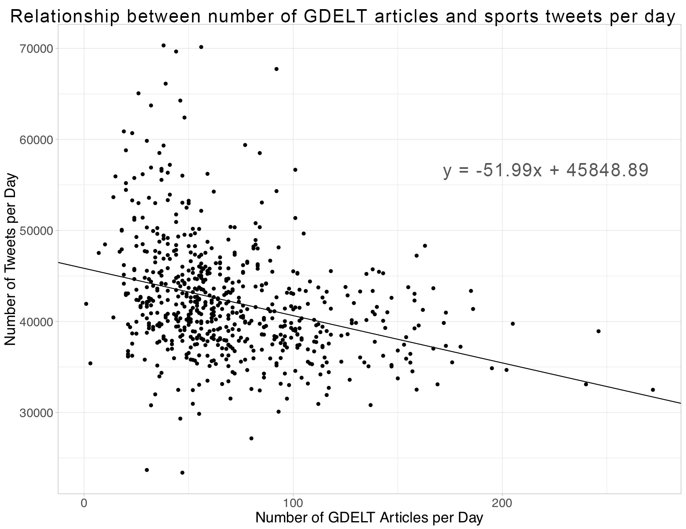

Bread and Circuses: Do we seek out sports as a distraction during times of international crisis?
Jacob Adolphe
tl;dr I used linear models to analyze the correlation between news reports of violence and tweets about sports. Findings show that a rise in negative news articles may have a negative effect on sports tweets. However, the findings are inconclusive.
The Inspiration
Our world is incredibly interconnected; we are constantly bombarded with news, good and bad, from all over the world. With so much violent news, I wondered if we sought out distractions to the global crisies that seem to always be occuring.
The saying "Bread and Circuses" is an old Roman phrase meaning the distraction of the public with food and entertainment. Roman politicans sought to keep the public distracted from politics
with events like chariot races and gladiator competitions. I was curious to see if a similar system existed today. I beleive that a greater number of negative news articles affect sports engagement on social media.
The Problem
There are a vast number of tweets that are sent out every second from all over the world. It would be impossible to any person to read through all the tweets
and classify them as sports related or not. Further, we are constantly receiving news from dozens to hundreds of outlets from around the world. The purpose of this project
is to write a program to automatically analyze the relationship between news and sports.
The Data
For this project I used the twitter data downloaded by Professor Mike Izbicki. I wrote a python script, framework provided by Professor Izbicki, to run through the twitter dataset
and count the number of tweets involving sports
All keywords include: Atlanta Hawks,Boston Celtics,Brooklyn Nets,Charlotte Bobcats,Chicago Bulls,Cleveland Cavaliers,Dallas Mavericks,Denver Nuggets,Detroit Pistons,Golden State Warriors,Houston Rockets,Indiana Pacers,LA Clippers,LA Lakers,Memphis Grizzlies,Miami Heat,Milwaukee Bucks,Minnesota Timberwolves,New Orleans Hornets,New York Knicks,Oklahoma City Thunder,Orlando Magic,Philadelphia Sixers,Phoenix Suns,Portland Trail Blazers,Sacramento Kings,San Antonio Spurs,Toronto Raptors,Utah Jazz,Washington Wizards,Arizona Cardinals,Atlanta Falcons,Baltimore Ravens,Buffalo Bills,Carolina Panthers,Chicago Bears,Cincinnati Bengals,Cleveland Browns,Dallas Cowboys,Denver Broncos,Detroit Lions,Green Bay Packers,Houston Texans,Indianapolis Colts,Jacksonville Jaguars,Kansas City Chiefs,Los Angeles Chargers,Los Angeles Rams,Miami Dolphins,Minnesota Vikings,New England Patriots,New Orleans Saints,New York Giants,New York Jets,Oakland Raiders,Philadelphia Eagles,Pittsburgh Steelers,San Francisco 49ers,Seattle Seahawks,Tampa Bay Buccaneers,Tennessee Titans,Washington Redskins,Atlanta Braves,Miami Marlins,New York Mets,Philadelphia Phillies,Washington Nationals,Chicago Cubs,Cincinnati Reds,Milwaukee Brewers,Pittsburgh Pirates,St. Louis Cardinals,Arizona Diamondbacks,Colorado Rockies,Los Angeles Dodgers,San Diego Padres,San Francisco Giants,Baltimore Orioles,Boston Red Sox,New York Yankees,Tampa Bay Rays,Toronto Blue Jays,Chicago White Sox,Cleveland Indians,Detroit Tigers,Kansas City Royals,Minnesota Twins,Houston Astros,Los Angeles Angels,Oakland Athletics,Seattle Mariners,Texas Rangers,Anaheim Ducks,Arizona Coyotes,Boston Bruins,Buffalo Sabres,Calgary Flames,Carolina Hurricanes,Chicago Blackhawks,Colorado Avalanche,Columbus Blue Jackets,Dallas Stars,Detroit Red Wings,Edmonton Oilers,Florida Panthers,Los Angeles Kings,Minnesota Wild,Montreal Canadiens,Nashville Predators,New Jersey Devils,New York Islanders,New York Rangers,Ottawa Senators,Philadelphia Flyers,Pittsburgh Penguins,San Jose Sharks,St. Louis Blues,Tampa Bay Lightning,Toronto Maple Leafs,Vancouver Canucks,Vegas Golden Knights,Washington Capitals,Winnipeg Jets,Atlanta United FC,Chicago Fire,Colorado Rapids,Columbus Crew SC,D.C. United,FC Dallas,Houston Dynamo,LA Galaxy,Los Angeles FC,Minnesota United FC,Montreal Impact,New England Revolution,New York City FC,New York Red Bulls,Orlando City SC,Philadelphia Union,Portland Timbers,Real Salt Lake,San Jose Earthquakes,Seattle Sounders FC,Sporting Kansas City,Toronto FC,Vancouver Whitecaps FC,nfl,nba,mlb,nhl,football,basketball,hockey,sport,espn,mls,soccer,wnba
by searching for keywords including the names of all the United States sports, leagues, teams, and related words such as 'espn' and 'ncaa' within the tweet text.
The twitter data was pulled from a server using a python script that searched for specific keywords in the each tweet. Initially,
I was going to include player names; however I figured there would be enough overlap between the keywords above and player names that it wouldn't be worth
the time. For example a tweet about Steph Curry will probably include the word 'baskeball' or 'nba' or 'golden state warriors' .
The script pulled a total of 27,295,723 tweets.
I used the Global Database of Events Language and Tone (GDELT) for the portion of my dataset involving the news
The GDELT dataset wall pulled from the GDELT project website. I used the online query tool to download every instance of a Code 20 article since 2008. There were a few technical limitations,
I was only able to pull 10,000 articles at once with the online query tool so I made around 25 different querys to gather my full dataset. In retrospect, I didn't use the data before 2017 so I spent a lot of
time gathering data I didn't need. .
I filtered down the six years of GDELT data to include only the news articles about mass violence
The GDELT project is able to find locations of news events, the type of event reported, countries involved, tone of the article, and many more attributes.
GDELT seperate events into categories called Conflict and Mediation Event Observation (CAMEO) event codes. These codes range from least violent, Code 1 = public statement, and most violent Code 20 = Use of Unconvential Violence. For this project I focused on the most violent
news articles.
, there was a total of 206,776 such articles since 2008 and 45,556 during the same time period as the tweet dataset.
The following two charts show the number of tweets per day and the number of GDELT articles per day from 10/26/2017 to 8/29/2019:


The Global Scale of the data
Using location data pulled from the GDELT dataset, we can see the vast number of violent news articles and their locations around the world
I was also able to obtian twitter data from nearly every continent. However, there are some drawbacks of using twitter data, there are very few tweets out of China, the most populus country in the world. This is becasue China doesn't really use twitter,
they use a different microblogging website called Weibo. Further, the dataset is limited by the keywords I chose. I focused on tweets regarding the main American sports leagues, teams and sports. There will be overlap
with other countries becasue I looked for keywords such as "football" and "soccer".
Inital Model
I began analyzing the relationship between news and sports by training a linear regression model on the dataset
For all of my model training I used the caret R package.
The independent variable was the number of news articles per date and the dependent variable was the number
of sports related tweets each day. This simple regression shows that the an increase in the number of violent news articles results in a slight decrease in the number of tweets about sports. A single increase in news articles is correlated with a decrease of around 33 tweets per day. This model only explains 5% of the variablity in the data.
The inital single regression model had an R-squared value of ~.05 depending on the random dataset used for training
The following graph shows a scatter plot of the dataset:

As we can see from this plot, we have a few outliers, there was one day with zero tweets about sports and there were two days with over 400 occurances of violent news articles. The day without any tweets about sports can be chalked up to an error in reading the
file containing the tweets for that day. However, the points with a very large number of GDELT articles can be attributed to reports of ethnic cleansing in Myanmar around November 22, 2017. I removed the outliers
from the dataset and retrained the linear model on the cleaned dataset. This new model is more accurate, explaining 10% of the variation in the dataset
The second single regression model had an R-squared value of ~.10
. Further, this new model finds that
that a single unit increase in violent news articles results in a 52 tweet decrease in sports tweets.
In order to improve the accuracy of the linear model I added several more dimensions in an attempt to reduce the bayes error and increased the number of datapoints in my training set to reduce the estimation error.
Improved Model
Luckily the GDELT project dataset had already extracted valuable information from the news articles it collected
I added 13 additional dimensions to the data: 7 lags representing the news cycle, total tone of articles for the day, average tone of the articles for the day (calculated by dividing total tone by number of articles per day), and binary variables representing the NFL, NBA, NHL, and MLB seasons.
.
One of the data fields was the tone of the article, the tone metric ranges from -100 to +100 with negative values representing negative tone and a positive value representing a positive tone.
I hypothesized that a negative article
tone would further depress the number of tweets about sports based on the previous model's analysis. So I added total tone for the day, the thought is that in people are bombarded with many articles with negative tones they would tweet less, I also added the average article tone to my new model.
Adding average and total tone to the model allows me to view the effect of the GDELT dataset on the number of tweets holding the average and total tone constant.
.
Further, since I believe tweets about sports may be seasonal and the number of fans for each American sports league differs, I added the seasons of each major sports league.
Adding binary variables representing each sports season allows me to view the effect of the GDELT dataset on the number of tweets holding the the value of the sports seasons constant.
.
Finally, based on an article from NeimanLab, I estimated that the news cycle for these events is seven days. As such, I lagged the GDELT dataset seven times to see how the past week's news articles affected the present number of tweets.
For final analysis, I took the
log of the number of tweets to estimate the percentage change of the independent variable. The plot below shows the results of the improved model

I found that a single increase in violent news articles results in a 1/10% decrease in tweets about sports. The greatest statistically significat driver behind tweets was the NFL
which, when in season, tweets about sports increased by 5%.
I performed a log transformation of the dependent variable to estimate the percentage change of the dependent variable controlling for the predictors. I did this transformation using the 'log1p' function in R.
Can we do better?
For the previous models, I used a simple linear model. The basic linear model weights all of the predictive values equally, this means there is room for improvement. In the CS145 course
we learned about three more extensions to linear models: lasso, ridge, and bridge. Lasso models essentially gets rid of the irrelevant predictive values. Ridge regressions add bias to the estimates in hope of reducing errors. The bridge regression makes the coefficents less volatile by weighting them towards zero.
I ran the dataset on each of the three additional models and determined that the ridge model was the most accurate as it had the lowest error, off by ~5800 tweets compared to 6000 from the linear model.
R calculated an optimal lambda value of 0.1 for the ridge model
In Conclusion
While the relationship between violent news and tweets about sports was very small, the final model is 99% sure that the number of violent news articles
has an negative effect on the number sports tweets. Although a 1/10% of change in tweet volume from an additional violent news article may seem insignificant, one must consider the vast scale of both datasets. There are approximately 500 million tweets sent per day around the world and GDELT has 3.2 trillion datapoints in its system.
Tweet information from class, GDELT information from gdeltproject.org
The negative relationship could be explained by the relationship between violent crime and outside temperature. Several studies including the 2017 research by Schinasi and Hamra show that violence and crime increase during warmer periods during the year. The models show that the NFL season has, by far, the greatest positive effect on the number of tweets sent out a day. Since the NFL plays during the colder months of the year, this may explain the negative relationship.
It is possible that the vast number of tweets during the NFL season obscured a different trend in the data.